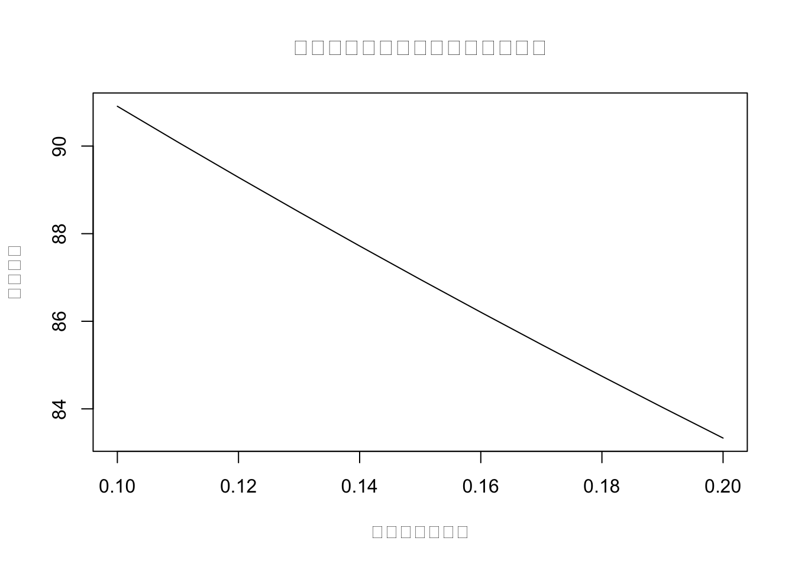
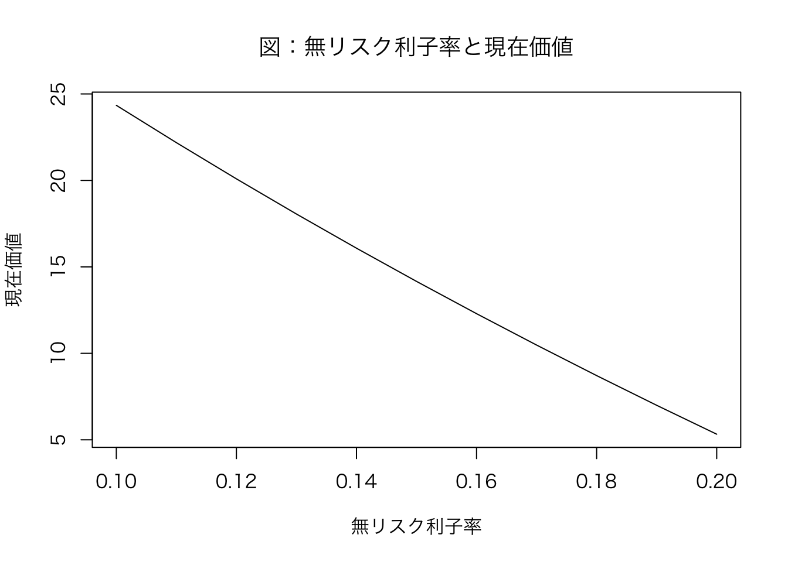

3 R言語入門
プログラミング言語にはいろんな種類があるけれど、今回学習するR言語は、インタプリタ型とよばれるもので、コンパイルという作業の必要が無く、書いたらすぐ実行できる仕様となっています。たとえば、教科書にあるように
を実行すれば、結果がすぐ表示されます。 RstudioとかVS Codeを使って、上のようなRソースコードを一気に書いて、まとめて実行するためのスクリプト・ファイルを作成します。
ソースコードを書くにあたり注意する点として、以下の4つについて説明します。
- 大文字と小文字は区別されるので、
xとXは別の変数として扱われます。 - 半角スペースは、区切り文字として扱われるので、
x <- 100とx<-100は同じ意味になります。 - 改行も、区切り文字として扱われます。長いソースコードは改行して読みやすくしましょう。
- コメントは、
#から行末までの文字列がコメントとして扱われ、実行されません。プログラムの内容を説明するためにたくさん書いて残しておきましょう。
3.1 Rの基本的な機能
3.1.1 スカラー変数の定義
この学習を通じて変数(variable)とは、数値や文字といったデータを格納するための箱を表し、中に何が入っているのかにより、スカラー変数、ベクトル、行列、データフレームなどに分類されます。まずは、スカラー変数の定義を学びます。
スカラー(scalar)とは、大きさだけで決まる量のことで、つまり、1つの数値を指します。 R言語ではスカラー変数を定義するには、<-を使います。たとえば、x <- 100と書けば、xというスカラー変数に100という数値を格納できます。このとき、<-は代入演算子と呼ばれ、右辺の値を左辺の変数に代入するという意味です。また、xという変数を左辺値(left-hand side)、100という数値を右辺値(right-hand side)と呼びます。
この中身を表示されるには、print()関数を使います。
あるいは
でも表示されます。
3.1.2 ベクトル変数の定義
ベクトル(vector)とは、大きさと向きで決まる量のことで、つまり、複数の数値を指します。R言語ではベクトル変数を定義するには、c()を使います。たとえば、x <- c(1, 2, 3)と書けば、xというベクトル変数に1, 2, 3という数値を格納できます。このとき、c()はベクトルを作る関数と呼ばれ、1, 2, 3という数値を引数として与えています。
等差数列を作る関数にseq()関数があります。seq()は3つの引数をとり、
from: 始点to: 終点by: 差分
を指定します。たとえば、2000年から2020年を表す年度の変数をyearとして定義するには、
[1] 2000 2001 2002 2003 2004 2005 2006 2007 2008 2009 2010 2011 2012 2013 2014
[16] 2015 2016 2017 2018 2019 2020と書けば、2000から2020までの公差1の等差数列を作ります。 seq()変数の引数には、fromとtoとbyの3つの引数を指定することができますが、fromとtoのみを指定することもできます。このとき、byの値は1となります。次のように書いても、上と同じ結果を得ることができます。
[1] 2000 2001 2002 2003 2004 2005 2006 2007 2008 2009 2010 2011 2012 2013 2014
[16] 2015 2016 2017 2018 2019 2020ベクトルの要素数を知るには、length()関数を使います。
ベクトル変数yearの中には21個の要素があることがわかります。
3.1.2.1 ベクトルの要素の取り出し
複数の要素をもつベクトルから、一部の要素を取り出すには、[]を使います。たとえば、xの2番目の要素を取り出すには、x[2]と書きます。このとき、[]は添字演算子と呼ばれ、2という添字を引数として与えています。添字は1から始まります。
上のyearから2000を取り出すには、year[1]、2020を取り出すにはyear[20]と書きます。 次のような書き方で、好きな要素を指定して取り出すことができます。
3.1.2.2 現在価値の計算
今の時点をt=0として、T年後に確実に得られるキャッシュ・フローCF_Tの現在価値PV_0は、 PV_0 = \frac{CF_T}{(1+r)^T} と書けます。たとえば1年後に確実に受け取れる100万円の現在価値PV_0を計算してみます。いま、無リスク利子率rは10%とします。
次に、この無リスク利子率rが変化した場合の現在価値の計算を考えます。まず、無リスク利子率のベクトルを定義します。
次に、無リスク利子率が変化した場合の現在価値を計算します。
[1] 90.90909 90.09009 89.28571 88.49558 87.71930 86.95652 86.20690 85.47009
[9] 84.74576 84.03361 83.33333無リスク利子率が0.1から0.2まで0.01ずつ変化した場合の現在価値が計算されました。この結果をグラフにしてみます。
3.1.3 基本パッケージplotによる作図
とりあえずサクッと作図してデータをチェックしたいとき、もとからR言語に組み込まれている基本関数plot()が便利です。先ほど作成したベクトル変数PVをグラフにしてみます。
いま、PVは11個の要素をもつベクトル変数なので、データを左から順番に並べた散布図(scatter diagram)が作成されています。これだと何のグラフか分かりづらいので、いろいろとオプションを指定してみます。
plot(
x = R, # x軸のデータ
y = PV, # y軸のデータ
xlab = "無リスク利子率",
ylab = "現在価値",
main = "無リスク利子率と現在価値の関係",
type = "l" # 線グラフ
)
Macだと文字化けしてしまいました。そこで文字コードを指定します。Windowsだとこの作業は不要です。
4 for文の使い方
プログラミングの基本要素である
- 繰り返し
- 分岐
- 関数
の最初の要素である「繰り返し」を行うための文法がfor文です。for文は、ある処理を繰り返し行うための文法です。たとえば、1から10までの整数を順番に表示するには、次のように書きます。
[1] 1
[1] 2
[1] 3
[1] 4
[1] 5
[1] 6
[1] 7
[1] 8
[1] 9
[1] 10この文の構造は、基本的には
となっています。
たとえば、教科書のように、
- 初期投資100万円
- 1年後に50万円のキャッシュ・フロー
- 2年後に50万円のキャッシュ・フロー
- 3年後に50万円のキャッシュ・フロー
という投資プロジェクトの現在価値を計算する場合、愚直に書くと次のようになります。
この上のコードの2行目から4行目はほぼ同じ内容なので、数字が変化しているところに注目し、for文を使って書き換えてみます。ここでは^1のところが1ずつ大きくなってます。この部分をiという変数に置き換えてみます。 ついでに、後で変化させることがあるかもしれない部分をすべて変数として定義しておきます。
R <- 0.1 # 無リスク利子率
NPV <- -100 # 初期投資
CF <- 50 # キャッシュ・フロー
for (i in 1:3) { # iは1から3まで
NPV <- NPV + CF / (1 + R)^i # 現在価値の計算
}
print(NPV)[1] 24.3426愚直に計算した場合の同じ結果となりました。 これを10年間の現在価値を計算する場合だとすると、
R <- 0.1 # 無リスク利子率
NPV <- -100 # 初期投資
NPV1 <- NPV +
50 / (1 + R)^1 +
50 / (1 + R)^2 +
50 / (1 + R)^3 +
50 / (1 + R)^4 +
50 / (1 + R)^5 +
50 / (1 + R)^6 +
50 / (1 + R)^7 +
50 / (1 + R)^8 +
50 / (1 + R)^9 +
50 / (1 + R)^10
print(NPV1)[1] 207.2284と面倒くさいことこの上ないですが、for文を使えば、
R <- 0.1 # 無リスク利子率
NPV <- -100 # 初期投資
for (i in 1:10) { # iは1から10まで
NPV <- NPV + 50 / (1 + R)^i
}
print(NPV)[1] 207.2284と短く書くことができます。使いこなせるように練習しておきましょう。
次のように、print()関数の位置を変えた場合、どうなるか考えてみてください。
R <- 0.1 # 無リスク利子率
NPV <- -100 # 初期投資
for (i in 1:3) { # iは1から10まで
print(NPV)
NPV <- NPV + 50 / (1 + R)^i
}[1] -100
[1] -54.54545
[1] -13.22314[1] 24.3426この場合、最初にNPVの中を表示し、次に1期目の現在価値を計算し、またその結果を表示し、2期目の現在価値を計算し・・・という順番で繰り返しが行われるので、計算の途中経過が表示されることになります。
4.0.1 if文
次に、プログラミングの基本要素である
- 繰り返し
- 分岐
- 関数
のうち分岐を行うための文法がif文です。if文は、ある条件を満たす場合にのみ処理を行うための文法です。たとえば、ある変数xが0より大きい場合にのみ、その変数を表示するには、次のように書きます。
この文の構造は、基本的には
のようになっています。 このif文を使って、NPVが0より大きい場合にのみ、「プロジェクトを実行！」と表示されるようにしてみます。
R <- 0.1 # 無リスク利子率
NPV <- -100 # 初期投資
for (i in 1:10) { # iは1から10まで
NPV <- NPV + 50 / (1 + R)^i
}
if (NPV > 0) { # NPVが0より大きい場合
print("プロジェクトを実行！") # 文字列を表示
}[1] "プロジェクトを実行！"ここではNPVの値が207.2284となりプラスになっているので、「プロジェクトを実行！」と表示されます。
4.1 NPVと割引率の関係の可視化
無リスク利子率が0.1から0.2まで0.01ずつ変化した場合の現在価値NPVの値を計算してみます。
R <- seq(0.1, 0.2, 0.01) # 無リスク利子率
N <- length(R) # 無リスク利子率の要素数 11個
NPV <- rep(NA, N) # ベクトル変数にN個のNAを代入
for (i in 1:N) { # iは1からNまで
NPV[i] <- -100 # 初期投資
for (j in 1:3) { # jは1から3まで
NPV[i] <- NPV[i] + 50 / (1 + R[i])^j # 現在価値
}
}
print(NPV) # 11個の現在価値を表示 [1] 24.342600 22.185736 20.091563 18.057630 16.081601 14.161256 12.294477
[8] 10.479248 8.713646 6.995838 5.324074少し複雑な構造しているので、順番に説明します。
- 1行目は、無リスク利子率のベクトル変数
Rを定義しています。ここでは、0.1から0.2まで0.01刻みのデータを作成しています。 - 2行目は、ベクトル変数
Rの要素数をNとして定義しています。ここでは、Nは11となります。 - 3行目は、ベクトル変数
NPVにN個のNAを代入しています。NAはNot Availableの略で、欠損値を表します。NAを代入することで、空っぽの箱が11個入ったベクトル変数NPVを用意します。 - 4行目から9行目は、
for文を使って、NPVの中身を計算しています。forが2回出てきているので、二重に繰り返しの処理を行っています。これをネストと呼びます。 1つのめforはiが1からN(ここでは11)まで変化し、2つめのforはjが1から3まで変化します。1つめのfor文のiが1のとき、次のfor文のjが1から3までの処理を繰り返し、次に1つめのfor文のiが2のとき、次のfor文のjが1から3までの処理を繰り返し・・・という順番で処理が行われます。 - 10行目は、
NPVの中身を表示しています。
この結果をグラフにしてみます。
par(family = "HiraKakuProN-W3") # 日本語フォントの設定
plot(
x = R, # x軸のデータ
y = NPV, # y軸のデータ
xlab = "無リスク利子率", # x軸のラベル
ylab = "現在価値", # y軸のラベル
main = "図：無リスク利子率と現在価値", # グラフのタイトル
type = "l" # 線グラフ
)
ベクトル化
上のコードは、for文を使って、NPVの中身を計算しています。しかし、R言語では、for文を使わずに、ベクトルを使って、同じことを行うことができます。このように、for文を使わずに、ベクトルを使って処理を行うことをベクトル化と呼びます。ベクトル化を行うと、処理が高速化されることがあります。
5 独自関数の定義の仕方
プログラミングの基本要素である
- 繰り返し
- 分岐
- 関数
の作り方について説明します。 Rでは自分で関数を定義することができます。関数を定義することで、同じ処理を何度も書く必要がなくなり、プログラムの見通しがよくなります。 例えば、足し算をする関数my_add()を定義してみます。
この関数の構造は、
となっています。つまり、この独自関数my_add()は、xとyという2つの引数(ひきすう)を足し合わせる関数です。数学的に書くなら、
f(x, y) = x + y
となります。これはfという関数は2つの引数を足す関数であるという意味になっています。 作成した独自関数my_add()を使ってみます。
3が出力されました。
このように、独自関数を作成する場合には、
- どのような引数を与えるのか？
- それに対してどのような処理を行うのか？
- 最終的にどの値を返す(出力させる)のか？
を考えておく必要があります。
では今までの流れで、現在価値を計算する関数を作成してみます。変化させたい値は、キャッシュフローCFと無リスク利子率Rなので、その2つを引数とする独自関数を作成します。 少し注意する必要がある点として、以下の計算例ではCFの1番目の要素は初期投資額となることに注意しましょう。
この関数calc_PV()を使って、現在価値を計算してみます。
ちゃんと計算されました。この関数を使って、無リスク利子率が0.1から0.2まで0.01ずつ変化した場合の現在価値を計算してみます。
[1] 24.342600 22.185736 20.091563 18.057630 16.081601 14.161256 12.294477
[8] 10.479248 8.713646 6.995838 5.324074計算されました。 関数の引数にデフォルトで値を設定することで、入力を楽にすることができます。例えば、無リスク利子率のデフォルト値を0.1に設定してみます。
すると、無リスク利子率を指定しなくても、デフォルト値が使われるようになります。
ただ計算を間違えるもとにもなるので、なるべく省略せずに、しっかり書くことが大事です。
5.0.0.1 もっと凝った独自関数
繰り返し、分岐、関数というプログラミングの基本要素を勉強したので、もう少し複雑なプログラムを作成してみます。
まずは、引数に正の数字以外のもの、あるいは文字列を入力した場合にエラーを表示する関数を作成します。
できました。ついでに、NPVの計算結果とともに、NPVが0より大きい場合にのみ、「プロジェクトを実行！」と表示する機能も実装してみます。
calc_PV_new <- function(CF, R = 0.1) {
if (R <= 0) {
stop("無リスク利子率は正の値を入力してください。") # エラー処理
}
if ( !is.numeric(CF) ) {
stop("キャッシュ・フローは数値を入力してください。")
}
if ( !is.numeric(R) ) {
stop("無リスク利子率は数値を入力してください。")
}
PV <- CF[1]
for (i in 2:length(CF)) {
PV <- PV + CF[i] / (1 + R)^(i - 1)
}
if (PV >= 0) { # NPVが0より大きい場合
paste0("NPVが", round(PV, digits = 2), "なので、プロジェクトを実行！") # 文字列を表示
} else {
paste0("NPVが", round(PV, digits = 2), "なのでプロジェクト中止！") # 文字列を表示
}
}いろいろ駆使してより短く簡単に書くなら、
calc_PV <- function(CF, R = 0.1) {
if (!is.numeric(CF) || !is.numeric(R) || R <= 0) {
stop("キャッシュ・フローと無リスク利子率は数値を入力し、無リスク利子率は正の値を入力してください。")
}
PV <- sum(sapply(1:length(CF), function(i) CF[i] / (1 + R)^(i - 1)))
if (PV >= 0) {
paste0("NPVが", round(PV, digits = 2), "なので、プロジェクトを実行！")
} else {
paste0("NPVが", round(PV, digits = 2), "なのでプロジェクト中止！")
}
}うまくいきました。 ちょっとキャッシュフローのベクトルを変化させて、初期投資を-200にすると、
ちゃんと中止のメッセージが出ました。
このように、分岐、繰り返し、関数を駆使して、様々なプログラムを作成することができます。プログラミングの基本要素を使いこなせるように、練習を重ねてください。まずは教科書に書いてあるソースコードを自分のPC上で実行してみてください。その際は、コピペせずに自分で入力するようにしてください。
5.0.0.2 付録：ベクトル化で早くなるのか？
どれほど高速化されるのかを確認するため、100万年分の現在価値を計算してみます。 最初に松浦のR環境を確認してみます。 Mac miniで、CPUはM1、メモリは8GBです。
_
platform aarch64-apple-darwin20
arch aarch64
os darwin20
system aarch64, darwin20
status
major 4
minor 2.2
year 2022
month 10
day 31
svn rev 83211
language R
version.string R version 4.2.2 (2022-10-31)
nickname Innocent and Trusting まずは、for文を使って計算してみます。 forで現在価値を計算する関数を作成します。 この関数では、繰り返し毎期の現在価値を計算し、それを足し合わせていく、という処理を繰り返し行っています。
プログラムの実行時間を計算するため、system.time()関数を使います。
ユーザ システム 経過
0.038 0.000 0.039 0.039 秒かかりました。 次に、ベクトル化した計算結果を見てみましょう。
ベクトルから直接現在価値を計算する関数を用いた計算速度を測ってみます。
ユーザ システム 経過
0.010 0.001 0.011 0.011 秒と、for文を使った場合に比べて、約 3.55 倍高速化されました。これがベクトル化による実行速度の効率化です。 とはいえ、演算に時間がかかるような大規模データや複雑なシミュレーションをするようになるまで、ベクトル化の恩恵はそれほど大きくないので、まずは読みやすく、確実に動くプログラムを書くことを心がけましょう。
6 まとめ
- スカラー変数・ベクトル変数の作り方
- 変数から任意の値を取り出す方法
plot()関数による作図for文を用いた繰り返し処理if文を用いた分岐処理funciton()を用いた独自関数- (参考) ベクトル化のすすめ